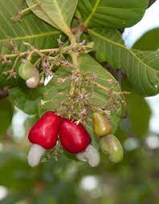

Cajuzinho-do-cerrado(Anacardium humile)

O cajuzinho-do-cerrado (Anacardium humile), também conhecido como cajuzinho-do-campo ou cajuí,
é uma planta em forma de arbustos encontrada nos estados de Mato Grosso, Mato Grosso do Sul,
Minas Gerais e no Distrito Federal.
O arbusto costuma habitar o Cerradão, o Cerrado, o Campo Sujo e o Campo Rupestre.
A coleta de cajuzinho-do-cerrado também garante renda a agricultores familiares do Cerrado,
através do extrativismo e comercialização do fruto.
Atualmente, existem diversas técnicas de processamento e aproveitamento integral do fruto
- Incidência: Mato Grosso, Mato Grosso do Sul,
- Minas Gerais e Distrito Federal.
- Fruto: castanha/cajuzinho-do-cerrado
- Nome científico: Anacardium humile
- Família: Anacardiaceae
Caracteríscas do fruto
- O cajuzinho-do-cerrado é um pseudofruto, já que seu fruto verdadeiro é a castanha.
- É pequeno, bem menor que o caju tradicional, de sabor ácido e suculento.
- Cores variam entre amarelo e vermelho.
- O fruto pesa entre 5g e 12g, possuindo uma semente por fruto.
Usos gastronômicos
O cajuí é consumido in natura ou processado. O fruto pode ser utilizado na preparação de sucos, bebidas e doces.
Também pode servir de ingrediente na produção de fermentados como vinho, vinagre, compotas, passas de caju, geleias, sorvetes, entre outros.
Quando fermentados, seus pequenos frutos fornecem uma espécie de aguardente conhecida pelos índios como cauim.
Com o fruto verdadeiro, são produzidas as amêndoas ou castanhas, também utilizadas em variadas receitas
Usos na medicina tradicional
Toda a planta do cajuzinho-do-cerrado é empregada na medicina popular.
A infusão de suas folhas e da casca do caule subterrâneo é utilizada para curar diarreias.
O óleo encontrado na castanha tem ação antisséptica e cicatrizante.
A infusão das inflorescências é utilizada para combater a tosse e baixar o nível de glicose em diabéticos.
Período de florada e época de frutos
A planta floresce entre os meses de setembro e outubro, dando frutos em novembro.
Alguns animais se alimentam do cajuí, caso da raposa do campo, que ajuda a dispersar as sementes.
Sobre a Plantação da muda
A plantação da muda foi efetuada por umas das equipes da sala 2º "J" do Centro de Ensino Médio 04 de Ceilândia.
A equipe é formada por:
- Everton Martins
- Kethely Caimbra
- Leticia Rodrigues
- Maria Clara
- Maria Luiza Rocha
- Maria Eduarda
- Matheus Mendes
- Nadyelly Katleem
- Natália
- Rafael Arcanjo
- Rafael Martins
- Thaís
"O projeto de arborização proposto pelo professor de biologia
Marcos Borzuk que foi apresentado em sala de
aula no dia 30 de setembro de 2021 iniciou-se
com a separação de grupos, o projeto consiste
em escolher uma planta típica do cerrado,
estudá-la, obter uma muda dessa planta,
plantá-la no terreno escolar e cuidar dela até o
fim do período letivo"
Fonte